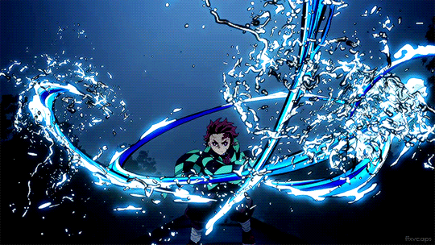
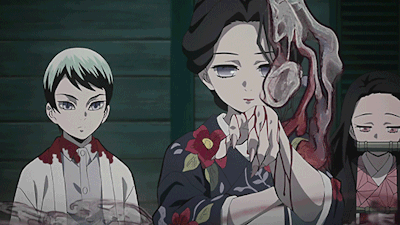

Tanjiro-Inosuke-Zenitsu
A csapatmunka hamar fontossá válik, amikor Tanjiro megismerkedik társaival:
Zenitsu Agatsumi – gyáva, de villámgyors, Villám légzés használó.
Inosuke Hashibira – heves, vadon nevelkedett, Fenevad Légzés használó.

Tanjiro Kamado egy hegyen élő, szénárusként dolgozó fiú, aki a családját támogatja. Egy nap, amikor távol van, démonok lemészárolják a családját, és egyedül a húga, Nezuko marad életben de démonná változva.
Tanjiro hamar rájön, hogy Nezuko más, mint a többi démon: megőrzi az érzelmeit és nem akar embereket bántani. Giyu Tomioka, a Víz Hashira felismeri ezt, és elküldi Tanjiro-t a mestere, Sakonji Urokodaki-hoz, hogy démonvadásznak tanuljon.
Tanjiro kemény kiképzést kap, elsajátítja a Víz légzés technikáit, majd sikeresen teljesíti a Végső Vizsgát, és hivatalosan is a Démonvadász Hadtest tagja lesz. Ezzel párhuzamosan Nezuko egy hipnotikus kondicionálást kap arra, hogy soha ne bántson embereket.
A csapatmunka hamar fontossá válik, amikor Tanjiro megismerkedik társaival:
Zenitsu Agatsumi – gyáva, de villámgyors, Villám légzés használó.
Inosuke Hashibira – heves, vadon nevelkedett, Fenevad Légzés használó.
Tanjiro célja kettős:
Tanjiro találkozik Tamayoval, egy démonorvossal, aki segít kutatni a Nezukóhoz hasonló különleges démonok titkát, és Muzan vérmintáira vadásztatja Tanjiro-t.

Ezt az oldalt készítette:Farkas Péter